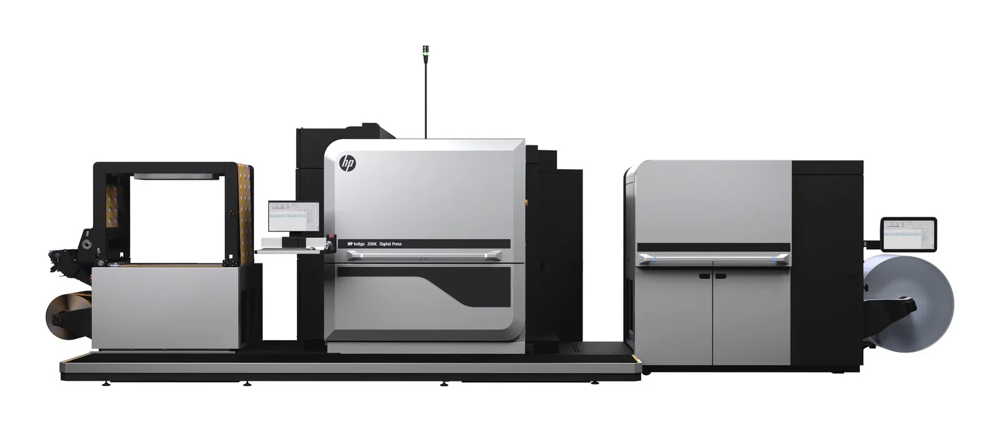

Digital printing removes the cylinder cost that makes short runs expensive. That changes what a small brand can order: several designs in one run, a seasonal variant without a new plate set, and a market test before committing to volume.

Sample shown for format reference only; any branding on the sample belongs to its respective owner. Production uses your own artwork and specifications.
Digital printing is a printing method, not a bag format: it runs on stand-up pouches, flat bottom bags, roll film and spouted pouches alike.
With gravure printing every colour needs its own engraved cylinder, and the cost of those cylinders has to be carried by the order. That is efficient when one design runs for millions of packs and uneconomic when a brand has six SKUs at modest volume. Digital printing has no cylinder set, so the cost per order stops scaling with the number of designs.
In practical terms this opens four doors. A new brand can order a realistic first quantity instead of a container load. A launch can carry several flavours or sizes as separate designs in one production run. A seasonal or limited edition can be printed without a new plate set. And a design can be changed between orders without writing off tooling.
The method suits the pouch as well as the film. HP Indigo 200K digital presses print on the laminated web before bag making, so the same press output becomes stand-up pouches, flat bottom bags, spouted pouches or roll film depending on the converting step. Priming and lacquer are part of the process, which is what allows digital output to hold up on a finished food pack rather than only on paper.
Digital printing is not the answer to everything. On very large repeat volumes with a fixed design, gravure still wins on cost per pouch, and where a brand needs a specific spot colour matched exactly across years of production, gravure holds that more reliably. The honest split is: digital for change and short runs, gravure for volume and long stable runs.
Structures are chosen against barrier needs, shelf life, filling method and the destination market.
Indicative ranges for planning. Final thickness, size and structure are confirmed per order.
| Printing Method | HP Indigo 200K digital press on laminated web |
|---|---|
| Colours | Process colour digital printing; spot colour matching discussed per artwork |
| Order Flexibility | Short runs and multiple designs practical because there is no cylinder set |
| Finishes | Gloss, matte or soft-touch lacquer, with registered matte/gloss effects where required |
| Formats | Stand-up, flat bottom, spouted, roll film and shaped pouches |
| Thickness | Structure-dependent, set by the product and shelf life rather than the press |
| Applications | New brand launches, multi-SKU ranges, seasonal editions, market tests |
| Customization | Artwork versioning, sizes, structures, closures and finishing |
Digital printing is the method described on this page. It is chosen where designs change, where several SKUs ship in one order, and where a first quantity has to be realistic rather than container-scale. Gravure printing remains the better route for a fixed design at large repeat volume.
Because there is no cylinder set, digital printing makes small trial quantities and mixed-design orders practical. The exact minimum depends on the pouch format, the structure and the artwork count rather than on a single number, so we confirm it against your specification. Gravure orders are quoted separately, since cylinder cost is part of that route.
The points buyers usually check before a first order.
Per pouch it is usually higher, but the order total often comes out lower on short runs because there is no cylinder cost. On large repeat volumes with a fixed design, gravure is the cheaper route per pouch. The right comparison is the full order cost at your real quantity.
Several. Each design is printed from its own file, so flavours, sizes or regional versions can be produced in the same run. The practical limit depends on the quantity per design and the artwork preparation.
Yes. The valve is fitted during converting, and its position is set before the print file is finalised. Digital printing is common for coffee because roasters change artwork and release small lots.
The press prints on primed laminate and the pack is lacquered, which is what protects the print through filling, handling and shelf life. Where a pack will be retorted or filled hot, the ink and lacquer system is specified for that process.
It depends on format, structure and the number of designs. Send the pack type, size, design count and target quantity and we will confirm what is workable instead of quoting a generic number.
The volume route: cylinder-based printing for large repeat orders.
Valve and zipper coffee packs, a natural fit for digital runs.
The format most often printed digitally for launches.
Digital or gravure printed film for automatic packaging lines.
Send your pack format, design count and target quantity — we will confirm what digital printing makes workable for your order.